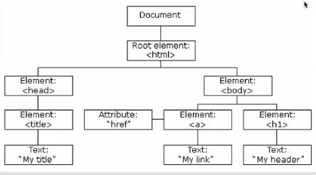

datetime:2019/7/3 15:48
author:nzb
语法与注释
JavaScript语句
JavaScript语句向浏览器发出的命令。语句的作用是告诉浏览器该做什么。
分号：
- 语句之间的分割是分号(;)
- 注意：分号是可选项，有时候看到不以分号隔开的。
JavaScript代码：
按照编写顺序依次执行
标识符：
- JavaScript标识符必须以字母、下划线或美元符号开始
- JavaScript关键字
JavaScript对大小写敏感
空格
JavaScript会忽略多余的空格
代码换行
保留字

单行注释
//
多行注释
/**/
变量和数据类型
变量是用来存储信息的“容器”，使用
var来声明例:
var x=10; var y=10.1; var z="hello";数据类型
- 字符串(String)
- 数字(Number)
- 布尔(Boolean)
- 数组(Array)
var arr=['hello',1,2];var arr=new Array('world',2,3);var arr=new Array(); arr[0]=4; arr[1]=5; arr[2]=6;
- 对象(Object)
- 空(null)
- 未定义
- 可以通过赋值为null的方式清除变量
运算符
赋值运算符
=、+=、-=、*=、/=、%=
算术运算符
+、-、*、/、++、--
比较运算符
==、===、!=、!==、>、<、>=、<=
逻辑运算符
&&、||、！
条件(三目)运算符
例：
x<10? "x比10小" : "x比10大"字符串操作
相加就是拼接，任何类型相加字符串都会转化为字符串然后拼接
分支结构
if...else...
var i = 10; if(i>=10){ document.write("i大于等于10"); }else{ document.write("i小于10"); } // 可以无限嵌套 if(i>10){ document.write("i大于10"); }else if(i<10){ document.write("i小于10"); }else{ document.write("i等于10"); }switch...cas...default...
var i = 5; switch (i){ case 1: document.write("i为1"); break; case 2: document.write("i为2"); break; default: document.write("条件不满足"); };
循环结构
for循环
var i=[1,2,3,4,5,6]; for(var j=0;j<i.length;j++){ document.write(i[j]); }; // 第二种 var i=[1,2,3,4,5,6]; var j=0; for(;j<i.length;j++){ document.write(i[j]); }; // 第三种 var i=[1,2,3,4,5,6]; var j=0; for(;j<i.length;){ document.write(i[j]); j++ }; // for/in循环 var i=[1,2,3,4,5,6]; var j; for(j in j){ document.write(i[j]); };while循环
var i = 1; while (i<10){ document.write("i"); i++; }do...while循环
var i = 1; do{ document.write("i"); i++; }while (i<10){ };
跳转语句
- break
- continue
- return
函数
定义函数
定义函数：
function 函数名(){
函数体; (代码块)}
注意：
JavaScript对大小写十分敏感，所以这里的function必须小写。在函数调用时，也必须按照函数的相同名称来调用函数。
调用函数
function demo() { var a = 10; var b = 20; var sum = a+b; alert(sum); } // 第一种调用方式 demo(); // 第二种调用方式 <button onclick="demo()">按钮</button>带参数的函数
- 参数的个数可以为任意多，每个参数通过","隔开
function demo(a,b) { var sum = a+b; alert(sum); } demo(10,20);
- 参数的个数可以为任意多，每个参数通过","隔开
带返回值的函数
function demo(a,b) { var sum = a+b; return sum; } var sum = demo(10,20); alert(sum)
局部变量和全局变量
- 局部变量：函数内部声明
全局变量：函数外部声明
var n = 10; m = 10; //全局变量 任何地方都可以使用 function demo() { var i = 10; //局部变量 只能在当前函数中使用 x = 10; // 全局变量 只要调用了该函数任何地方都可以使用 } demo(); alert(x);
异常捕获
异常
当JavaScript引擎执行JavaScript代码时，发生了错误，导致程序停止运行
异常抛出
当异常产生，并且将这个异常生成一个错误信息
异常捕获
try{
发生异常的代码块;}catch(err){
错误信息处理;}
Throw语句：
通过throw语句创建一个自定义错误
<form> <input type="text" id="txt"> <button onclick="demo()">提交</button> </form> <script> function demo() { try{ var e = document.getElementById("txt").value; if(e==""){ throw "请输入"; } }catch (e) { alert(e) } } </script>
事件
什么是事件
事件是可以被JavaScript侦测到的行为
| 事件 | 描述 | |------|-----| | onClick | 单击事件 | | onMouseOver | 鼠标经过事件 | | onMouseOut | 鼠标移出事件 | | onChange | 文本内容改变事件 | | onSelect | 文本框选中事件 | | onFocus | 光标聚集事件 | | onBlur | 移开光标事件 | | onLoad | 网页加载事件 | | onUnload | 关闭网页事件 |
事件处理
- 事件类型
- UI事件：
load/unload/error/resize/scroll - 键盘事件：
keydown/keyup/keypress - 鼠标事件：
click/dbclick/mousedown/mouseup/mousemove/mouseover/mouseout - 焦点事件：
focus/blur - 表单事件：
input/change/submit/reset/cut/copy/paste/select
- UI事件：
- 事件绑定
- HTML事件处理程序（不推荐使用，因为要做到标签与代码分离）
- 传统的DOM事件处理程序（只能附加一个回调函数）
- 事件监听器（旧的浏览器中不被支持）
- 事件流：事件捕获 / 事件冒泡
- 事件对象（低版本IE中的window.event）
target（有些浏览器使用srcElement）获取事件目标type：获取事件类型cancelable：preventDefault()：阻止事件默认行为stopPropagation()（低版本IE中的cancelBubble）：阻止时间冒泡
- 鼠标事件 - 事件发生的位置
- 屏幕位置：
screenX和screenY - 页面位置：
pageX和pageY - 客户端位置：
clientX和clientY
- 屏幕位置：
- 键盘事件 - 哪个键被按下了
keyCode属性（有些浏览器使用which）String.fromCharCode(event.keyCode)
- HTML5事件
DOMContentLoadedhashchangebeforeunload
- 事件类型
DOM
HTML DOM
当网页被加载时，浏览器会创建页面的文档对象模型(Document Object Model)

DOM操作HTML
- JavaScript能够改变页面中的所有HTML元素
- JavaScript能够改变页面中的所有HTML属性
- JavaScript能够改变页面中的所有CSS样式
- JavaScript能够改变页面中的所有事件作出反应
DOM操作HTML
改变 HTML 输出流
注意：绝对不要在文档加载完成之后使用document.write()。这会覆盖该文档
寻找元素：
- 通过id找到HTML元素
- 通过标签名找到HTML元素
改变 HTML 内容
使用属性：innerHTML
document.getElementById(id).innerHTML=新的 HTML改变 HTML 属性
使用属性：attribute
document.getElementById(id).attribute=新属性值document.getElementById(id).href="https://www.baidu.com"document.getElementById(id).src="https://www.baidu.com"
DOM操作CSS
改变 HTML 样式
如需改变 HTML 元素的样式，请使用这个语法：
document.getElementById(id).style.property=新样式<!DOCTYPE html> <html> <head> <meta charset="utf-8"> <title>菜鸟教程(runoob.com)</title> </head> <body> <p id="p1">Hello World!</p> <p id="p2">Hello World!</p> <script> document.getElementById("p2").style.color="blue"; document.getElementById("p2").style.fontFamily="Arial"; document.getElementById("p2").style.fontSize="larger"; </script> <p>以上段落通过脚本修改。</p> </body> </html>
DOM EventListener
addEventListener()
- addEventListener() 方法用于向指定元素添加事件句柄。
- addEventListener() 方法添加的事件句柄不会覆盖已存在的事件句柄。
- 你可以向一个元素添加多个事件句柄。
- 你可以向同个元素添加多个同类型的事件句柄，如：两个 "click" 事件。
- 你可以向任何 DOM 对象添加事件监听，不仅仅是 HTML 元素。如： window 对象。
- addEventListener() 方法可以更简单的控制事件（冒泡与捕获）。
- 当你使用 addEventListener() 方法时, JavaScript 从 HTML 标记中分离开来，可读性更强， 在没有控制HTML标记时也可以添加事件监听。
- 你可以使用 removeEventListener() 方法来移除事件的监听。
- 语法：
element.addEventListener(event, function, useCapture);- 第一个参数是事件的类型 (如 "click" 或 "mousedown").
- 第二个参数是事件触发后调用的函数。
- 第三个参数是个布尔值用于描述事件是冒泡还是捕获。该参数是可选的。
- 注意：不要使用 "on" 前缀。 例如，使用 "click" ,而不是使用 "onclick"。
- 例：在用户点击按钮时触发监听事件：
document.getElementById("myBtn").addEventListener("click", displayDate);
removeEventListener()
- removeEventListener() 方法移除由 addEventListener() 方法添加的事件句柄:
element.removeEventListener("mousemove", myFunction);
- removeEventListener() 方法移除由 addEventListener() 方法添加的事件句柄:
事件冒泡或事件捕获？
- 事件传递有两种方式：冒泡与捕获。
- 事件传递定义了元素事件触发的顺序。 如果你将
<p>元素插入到<div>元素中，用户点击<p>元素, 哪个元素的 "click" 事件先被触发呢？ - 在 冒泡 中，内部元素的事件会先被触发，然后再触发外部元素，即：
<p>元素的点击事件先触发，然后会触发<div>元素的点击事件。 - 在 捕获 中，外部元素的事件会先被触发，然后才会触发内部元素的事件，即：
<div>元素的点击事件先触发 ，然后再触发<p>元素的点击事件。 - addEventListener() 方法可以指定 "useCapture" 参数来设置传递类型：
addEventListener(event, function, useCapture); - 默认值为 false, 即冒泡传递，当值为 true 时, 事件使用捕获传递。
浏览器支持
IE 8 及更早 IE 版本，Opera 7.0及其更早版本不支持 addEventListener() 和 removeEventListener() 方法。但是，对于这类浏览器版本可以使用 detachEvent() 方法来移除事件句柄:
element.attachEvent(event, function);element.detachEvent(event, function);例：
var x = document.getElementById("myBtn"); if (x.addEventListener) { // 所有主流浏览器，除了 IE 8 及更早版本 x.addEventListener("click", myFunction); } else if (x.attachEvent) { // IE 8 及更早版本 x.attachEvent("onclick", myFunction); }